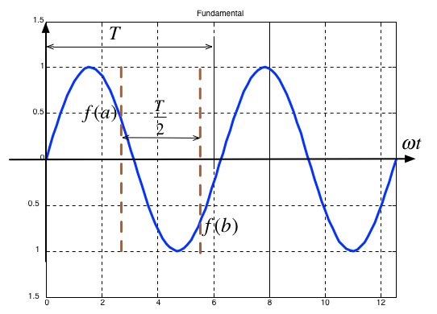

Worksheet 2#
To accompany Unit 3.1 Trigonometric Fourier Series#
Colophon#
This worksheet can be downloaded as a PDF file. We will step through this worksheet in class.
An annotatable copy of the notes for this presentation will be distributed before the second class meeting as Worksheet 2 in the Week 3: Classroom Activities section of the Canvas site. I will also distribute a copy to your personal Worksheets section of the OneNote Class Notebook so that you can add your own notes using OneNote.
You are expected to have at least watched the video presentation of Unit 3.1: Trigonometric Fourier Series of the notes before coming to class. If you haven’t watch it afterwards!
After class, the lecture recording and the annotated version of the worksheets will be made available through Canvas.
Motivating Examples#
This Fourier Series demo, developed by Members of the Center for Signal and Image Processing (CSIP) at the School of Electrical and Computer Engineering at the Georgia Institute of Technology, shows how periodic signals can be synthesised by a sum of sinusoidal signals.
It is here used as a motivational example in our introduction to Fourier Series. (See also Fourier Series from Wolfram MathWorld referenced in the Quick Reference on Blackboard.)
To install this example, download the zip file and unpack it somewhere on your MATLAB path.
The Trigonometric Fourier Series#
Any periodic waveform \(f(t)\) can be represented as
or equivalently (if more confusingly)
where \(\Omega_0\) rad/s is the fundamental frequency.
Evaluation of the Fourier series coefficients#
The coefficients are obtained from the following expressions (valid for any periodic waveform with fundamental frequency \(\Omega_0\) so long as we integrate over one period \(0\to T_0\) where \(T_0 = 2\pi/\Omega_0\)), and \(\theta = \Omega_0 t\):
Demo 1#
Building up wave forms from sinusoids.
% Setup working directory
clear vars
cd ../matlab
format compact
% Add install directory to path
path('/Users/eechris/MATLAB-Drive/EG-247-Examples/fseriesdemo',path)
% Run demo
fseriesdemo
Demo 2#
Actual measurements
Taken by Dr Tim Davies with a Rhode&Schwarz Oscilloscope.
Note all spectra shown in these slides are generated numerically from the input signals by sampling and the application of the Fast Fourier Transform (FFT).
1 kHz Sinewave#
Spectrum of 1kHz sinewave#

1 kHz Squarewave#

Spectrum of 1kHz square wave#

Clearly showing peaks at fundamental, 1/3, 1/5, 1/7 and 1/9 at 3rd, 5th and 7th harmonic frequencies. Note for sawtooth, harmonics decline in amplitude as the reciprocal of the of harmonic number \(n\).
1 kHz triangle waveform#

Spectrum of 1kHz triangle waveform#
Clearly showing peaks at fundamental, 1/9, 1/25, 1/7 and 1/49 at 3rd, 5th and 7th harmonic frequencies. Note for triangle, harmonics decline in amplitude as the reciprocal of the square of \(n\).
Odd, Even and Half-wave Symmetry#
Odd- and even symmetry#
An odd function is one for which \(f(t) = -f(-t)\). The function \(\sin t\) is an odd function.
An even function is one for which \(f(t) = f(-t)\). The function \(\cos t\) is an even function.
Half-wave symmetry#
A periodic function with period \(T\) is a function for which \(f(t) = f(t + T)\)
A periodic function with period \(T\), has half-wave symmetry if \(f(t) = -f(t + T/2)\)
Symmetry in Trigonometric Fourier Series#
There are simplifications we can make if the original periodic properties has certain properties:
If \(f(t)\) is odd, \(a_0=0\) and there will be no cosine terms so \({a_n} = 0\; \forall n > 0\)
If \(f(t)\) is even, there will be no sine terms and \({b_n} = 0\; \forall n > 0\). The DC term (\(a_0\)) may or may not be zero.
If \(f(t)\) has half-wave symmetry only the odd harmonics will be present. That is \(a_n\) and \(b_n\) is zero for all even values of \(n\) (0, 2, 4, …)
Symmetry in Common Waveforms#
To reproduce the following waveforms (without annotation) publish the script waves.m.
Squarewave#

Average value over period \(T\) is …?
It is an odd/even function?
It has/has not half-wave symmetry \(f(t)=-f(t+T/2)\)?
Shifted Squarewave#

Average value over period \(T\) is
It is an odd/even function?
It has/has not half-wave symmetry \(f(t)=-f(t+T/2)\)?
Sawtooth#

Average value over period \(T\) is
It is an odd/even function?
It has/has not half-wave symmetry \(f(t)=-f(t+T/2)\)?
Triangle#

Average value over period \(T\) is
It is an odd/even function?
It has/has not half-wave symmetry \(f(t)=-f(t+T/2)\)?
Symmetry in fundamental, Second and Third Harmonics#
In the following, \(T/2\) is taken to be the half-period of the fundamental sinewave.
Fundamental#
Average value over period \(T\) is
It is an odd/even function?
It has/has not half-wave symmetry \(f(t)=-f(t+T/2)\)?
Second Harmonic#
Average value over period \(T\) is
It is an odd/even function?
It has/has not half-wave symmetry \(f(t)=-f(t+T/2)\)?
Third Harmonic#

Average value over period \(T\) is
It is an odd/even function?
It has/has not half-wave symmetry \(f(t)=-f(t+T/2)\)?
Some simplifications that result from symmetry#
The limits of the integrals used to compute the coefficents \(a_n\) and \(b_n\) of the Fourier series are given as \(0\to 2\pi\) which is one period \(T\)
We could also choose to integrate from \(-\pi \to \pi\)
If the function is odd, or even or has half-wave symmetry we can compute \(a_n\) and \(b_n\) by integrating from \(0\to \pi\) and multiplying by 2.
If we have half-wave symmetry we can compute \(a_n\) and \(b_n\) by integrating from \(0\to \pi/2\) and multiplying by 4.
(For more details see page 7-10 of the textbook)
Computing coefficients of Trig. Fourier Series in Matlab#
As an example let’s take a square wave with amplitude \(\pm A\) and period \(T\).

Solution#
Solution: See square_ftrig.mlx. Script confirms that:
\(a_0 = 0\)
\(a_i = 0\): function is odd
\(b_i = 0\): for \(i\) even - half-wave symmetry
ft =
(4*A*sin(t))/pi + (4*A*sin(3*t))/(3*pi) + (4*A*sin(5*t))/(5*pi) + (4*A*sin(7*t))/(7*pi) + (4*A*sin(9*t))/(9*pi) + (4*A*sin(11*t))/(11*pi)
open square_ftrig
Note that the coefficients match those given in the textbook (Section 7.4.1).
Using symmetry - computing the Fourier series coefficients of the shifted square wave#

As before \(a_0=0\)
We observe that this function is even, so all \(b_k\) coefficents will be zero
The waveform has half-wave symmetry, so only odd indexed coeeficents will be present.
Further more, because it has half-wave symmetry we can just integrate from \(0 \to \pi/2\) and multiply the result by 4.
See shifted_sq_ftrig.mlx.
ft =
(4*A*cos(t))/pi - (4*A*cos(3*t))/(3*pi) + (4*A*cos(5*t))/(5*pi) - (4*A*cos(7*t))/(7*pi) + (4*A*cos(9*t))/(9*pi) - (4*A*cos(11*t))/(11*pi)
open shifted_sq_ftrig
Note that the coefficients match those given in the textbook (Section 7.4.2).